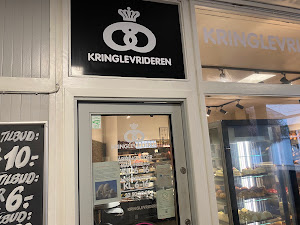
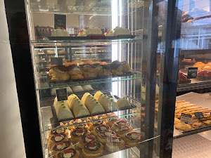
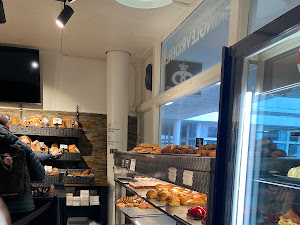
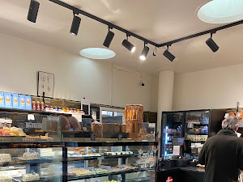
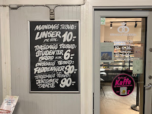

Bageriet i Skottegårdens Butikscenter – brød, rundstykker, kager og kaffe – åbent alle dage kl. 06–16.
Friskt brød, og rundstykker smurt med din yndlingsost, mens du venter.
Fra klassikere til mango-cheesecake, som flere af vores gæster elsker.
Kaffe, kakao eller te fra automaten – og to siddepladser, hvis du vil blive.
Linser · 10 kr. pr. stk.
Studenterbrød · 6 kr.
Flødekager · 30 kr.
Tilbud · 90 kr.





“De har noget af det bedste morgenbrød på Amager! Priserne er rimelige og personalet for det meste søde.”
“Rigtig solid bager som fortjener højere rating! Gode boller, brød og kager til fornuftige priser, sød betjening.”
“Stort udvalg af brød og kager. Velsmagende og fint præsenteret.”
“En klassisk dansk bager med brød som i gamle dage.”
“Brødet er ret godt, men kagerne er helt fantastiske, især mango-cheesecake.”
“Har de bedste overskårne med syltetøj.”